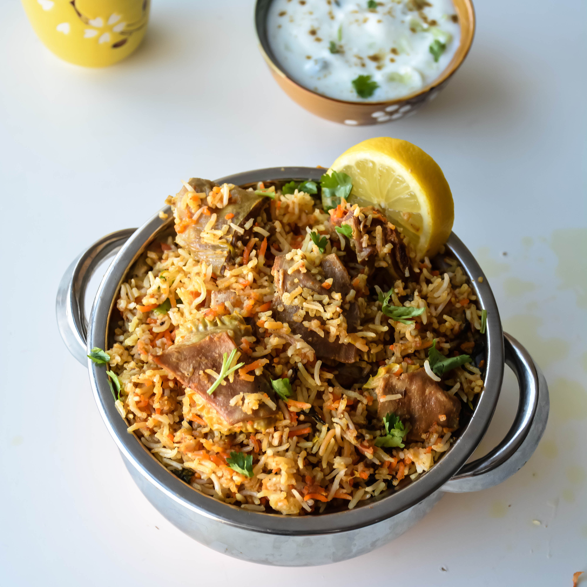

Lamb Biryani Recipe

Lamb Biryani is the ULTIMATE comfort food
The lamb Biryani, a flavorful and aromatic dish, comprises a delightful
blend of traditional Pakistani ingredients. From fragrant basmati rice to
tender pieces of lamb, this dish is designed to tantalize your taste buds.
Ingredients
Below are the ingredients required to make this dish for
4 people.
- 3 cups of Basmati rice
- 3 tablespoons of Butter Ghee
- 2 large brown onions
- 2 large vine tomatoes
- 1kg Lamb or Mutton
- 3 teaspoons of Garam Masala
- 3 teaspoons of salt and pepper
- 1 teaspoon of Cumin
- 3 tablespoons of garlic and ginger paste
- 2 teaspoons of turmeric
- 2 green chilli
- half a bunch of coriander
How to make a simple Lamb Biryani step by step
Simple steps to make the best Lamb Biryani:
- Put 3 tablespoons of Butter Ghee into a pot on medium flame
- Chop 3 onions into slices and put in pot
-
Allow the onions to sweat and when they start turning brown, add the
garlic and ginger paste
- Add 1 teaspoon of Cumin
- Add the 1kg of lamb or mutton into pot and mix well
-
Add the garam masala, turmeric and tomatoes into the pot and stir well
-
Place the cooker on low/medium heat and pop the lid on to allow the
tomatoes to reduce and create a sauce
-
Once the tomatoes have reduced and the pot looks saucy, add 500ml of hot
water and stir
-
Mix well and pop the lid back on. Keep the cooker on a low/medium heat
and allow the meat to tenderize for around 1 hour.
-
Keep going back to the pot to mix every 15 mins. Add more water to pot
if needed
-
Now time to make the rice. Scoop 3 cups of rice and add to a colander to
wash
- Wash the rice thoroughly
-
Add rice into a new pot and add cold water. To measure how much water
you need, stick your index finger in the rice and add water until in
reaches half your index finger
-
Put lid on rice pot and place on low heat for 20 mins until rice has
become fluffy
- Chop 2 chilli and add them into meat mixture.
-
Once the meat has become tender, add the finished rice into the pot and
mix well.
- Add coriander on top as a garnish
Now enjoy your Lamb Biryani!